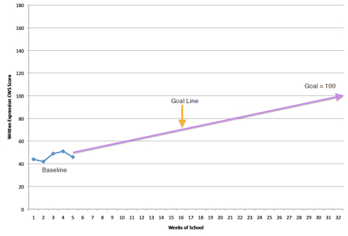

Webinar 3. Monitoring Progress in Written Expression: Implementation and Administration
- Administration procedures for CBM screening and progress monitoring in the area of writing.
- Scoring CBM Written Expression measures with 99% accuracy and reliability.
- Graphing student data and establishing writing goals.
Implementing progress monitoring in writing
Screening
The purpose of the screening process is to determine the current level of performance in written expression. Screening procedures are used to establish a baseline that can be used as the reference point for student progress.
Screening can also be used to determine a student’s written English performance when compared to students in his/her class or a sample of students at the same grade level.
Procedures for Screening
Setting baselines
-
A student’s baseline score is our best estimate of performance at the beginning of progress monitoring.
-
If a student cannot write complete sentences, pre-writing growth is typically measured using sentence copying and paragraph copying probes.
-
Select probes (story starter/ picture stimuli) that match the student’s interests and background knowledge.
-
Administer 3-5 writing probes over the course of a week. The scores can be graphed for a visual baseline.
Setting goals
Research suggests that when teachers set ambitious goals for their students, there is a positive effect on student growth (11).
- Determine median of the baseline data.
- Put an “X” on the vertical line at the level of the median value.
- Set a goal for improvement in written expression (number of CWS improvement).
- Determine number of weeks you will progress monitor
- Multiply the number of weeks by the criterion (e.g., 2 cws/wk)
- Add this number to the median baseline point
- Calculate the long-range goal (LRG) (the student’s CWS goal at the end of the school year;); place an “X” at the intersection of the date of the last data point and the value of the LRG.
- Draw a line that connects the baseline data with the LRG.
Video: Maren Hadley about time and implementation.
Example of monitoring writing progress

Written Expression Procedures (Administration Script from EdCheckUp)
- Have materials ready
- Student copies of the story starter picture and paper and pencil to write
- Timer or stopwatch
- Administration script
- Begin assessment by saying
to the students:
“I want you to write a story. It will be a short story. You will have 1 minute to think about the story and then you will have 3 minutes to write your story.” - Write the story starter on the board and/or show the student the illustration. Read the story starter with the students.
- Give the students the paper with the story starter and a pencil.
- Remind the students that they have 1 minute to think about what they will write. Tell them that you will flash the lights when it is time to start writing. Then you will flash the lights when it is time to stop writing.
- Direct the students to think about the story they will write. (Do not write words you want the student to use on the board. Allow the students to do their own work and to demonstrate their English language writing skills).
- After 1 minute, flash the lights and tell the students to begin writing.
- After 3 minutes, flash the lights and tell the students to stop writing.
- Collect the papers.
Sentence Copying Procedures (Administration Script from EdCheckUp)
- Have materials ready
- Student copies of the sentence copying probes and pencils
- Timer or stopwatch
- Administration script
- Begin assessment by saying to the students:
“You will copy some sentences for me. I will give you a sheet of paper with sentences on it. You will write the words on the line below the words. You will have a short time to copy the words. Copy as many words as you can.” - Show the students a practice sentence (overhead or on a smart board).
- Demonstrate the process of copying the words on the lines.
“Now it is your turn.” - Distribute the lined probe papers and pencils for Sentence Copying.
“Start copying the words when I flash the lights. Stop copying the words when I flash the lights.” - When all of the students are ready, set your timer for 3 minutes flash the lights and tell them to begin writing
- After 3 minutes, flash the lights, say stop and tell the students to put their pencils down.
- Collect the papers.
Scoring Guidelines for Written Expression
All scoring methods from http://www.progressmonitoring.net and http://www.edcheckup.com.
- Read the writing sample before proceeding with
scoring.
- Put a box around any words that are illegible. Count the number of illegible words (ILW).
- Underline words that are spelled incorrectly (IW).
- Place a vertical line at the place where each sentence should end or where there should be punctuation.
- Total number of words written (WW)
- Count the total number of words written in the story regardless of spelling.
- Do not count the words that are provided
as part of the story starter.
- Words must be clearly separated by a space – words with no space (i.e. theboy) count as one word and are incorrectly spelled.
- If a student is unsure of spelling and draws a line for part of the word, count as one word, but incorrectly spelled (i.e. exclam___on)
- Slang (i.e. “cuz”) is counted as a word, but incorrectly spelled
- Numerals are not counted as words.
- Monetary amounts are counted as one word, correctly spelled (i.e. $30). If the student writes 30 dollars, count that as two words. If the student writes $30 dollars, count as two words, but one is spelled correctly and one is spelled incorrectly.
- Total number of words spelled correctly (CWW)
- Count the total number of words written in the writing sample that are also spelled correctly.
- All personal nouns and names are included in the count.
- Numerals are not counted as words, except when signifying a monetary amount.
- Correct Word Sequences (CWS)
- CWS are two adjacent words (correctly spelled) that are semantically and syntactically acceptable within the clause or phrase where they are written.
- Place a caret (^) between and over the two words that form the CWS.
Example:
^ She^ went^ to^ the^ store^ and^ bought^some^ chocolate^.
- Incorrect Word Sequences (IWS)
- An IWS is two adjacent words that are not scored as CWS.
Example:
_ she^ went v the^ store v buy^ chocolate^.
- Correct Minus Incorrect Word Sequence (CIWS)
- Subtract the IWS score from the CWS score of the student’s writing sample.
- CIWS is the most reliable and valid measure for
CBM of written expression for students in Grade 7 and higher
(10).
- Use the CWS score and the IWS scores separately for elementary and middle school students who are deaf or hard of hearing.
- Set the instructional goal to increase the CWS and decrease the IWS scores.
Graphing CBM Writing scores
- For beginning writers, the WW score may be used for progress monitoring in written expression (9)
- When students begin to write short narratives, the CWW score may be used to monitor growth in written expression weekly. The CWS and IWS may be used monthly or quarterly.
- The CWS and IWS are important to review and graph with the students in the middle and early secondary years. These scores are indices that reflect valid growth in written expression.